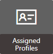
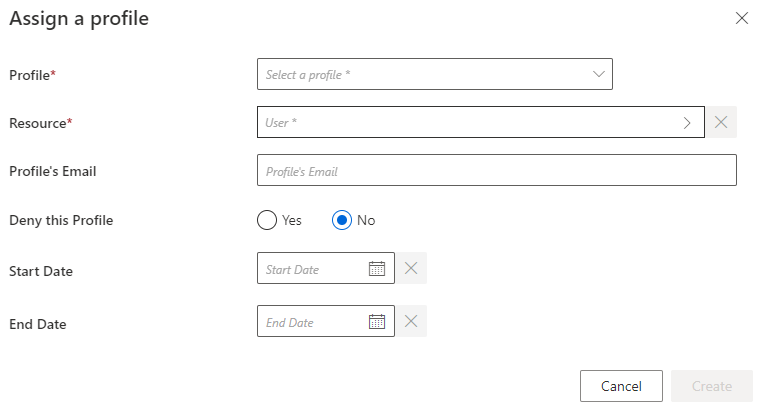

Assign Users a Profile
How to assign Identity Manager's access permissions to users through profiles.
Overview
All the permissions to access items in Identity Manager, and to perform given actions, are managed by assigning profiles to users and permissions to profiles. See the Assigned Profile and References: Permissions topics for additional information.
For example, the access to the list of users with their personal data is usually restricted to HR people, and the possibility to modify personal data restricted to HR managers.
We define here a permission as an entitlement within Identity Manager. See the Configure a User Profile topic for additional information.
Users are assigned profiles according to the permissions they need to work, at least one profile per user. A user without a profile cannot access the application. Experience shows that most users have one profile, sometimes two, and rare case have maximum three, or more.
The goal here is to link users to basic profiles.
The right time to assign profiles to users is just before they need it, so it depends on the deployment strategy.
For example, we connected a given application and now we want to list orphaned accounts. Then we need to assign a role officer.
The priority is often about resource managers who will review orphaned and unused accounts.
Participants and Artifacts
Integrators must have the knowledge of who must be able to access what within Identity Manager.
|
Input |
Output |
|---|---|
|
Configured profiles (required) |
Assigned profiles |
See the Configure a User Profile topic for additional information.
Assign a Profile to an Account
In the following section you will read about how to assign a profile to an account.
Manual assignment
Assign manually a profile to a user by proceeding as follows:

Step 1 – Access the Assigned Profiles screen from the home page in the Administration section.

Step 2 – Click on the addition button at the top right corner.

Step 3 – Fill in the fields.
- Profile: Profile chosen from among existing profiles.
- Resource: Identity chosen from among entries to be assigned said profile.
- Profile's Email: Email created in order to receive the corresponding approval requests.
- Deny this Profile: Option that forbids the profile assignment instead of applying it.
- Start Date and End Date: Particularly useful for profile delegation.
NOTE: If filters are defined in the Access Rules, and are assigned to the profile, a Criteria section will appear containing them. Filters are conditions that, if met, trigger the Access Control Rule Application.
The only filters which can be displayed in this section are filters related to dimensions or hard coded criteria (Single Role, Composite Role, Resource Type and Category).
The filters are defined in the XML configuration on the access control rules. The criteria displayed are a fusion of the filters of all the rules associated with the profile. See the Access Control Rule topic for additional information.
Automatic assignment
The largest profiles with the most basic permissions (like a simple access to the application) concern many identities and are low-privileged. Thus integrators can set up profile assignment rules through the XML configuration in order to assign profiles automatically, based on accounts' resource type and potentially specific criteria. See the Profile Rule Context topic for additional information.
Click on Launch to apply these profile rules.
NOTE: Profile rules can also be applied through the same button on the Profiles page, by clicking on Settings in the Configuration section, then on General > Profiles in the left menu.
Delegate a Profile
Sometimes, users need to lend their entitlements, while on leave for example. In this case, it is interesting to create new profiles, identical to the initial ones but without the right to delegate the corresponding entitlements.
For example, let us consider the Manager profile which we appointed as request validator per department. In order to ensure the presence of all validators at all times, we choose to create a Assistant Manager profile which is to be assigned occasionally to another user by a manager. A user with the Assistant Manager profile will receive exactly the same entitlements as someone with the Manager profile, except for the ability to assign the Assistant Manager to another user.
Thus no workflow in Identity Manager can be blocked by the absence of the workflow's actors, and security is ensured by preventing unwanted entitlement delegation.
Verify Profile Configuration and Assignment
In order to verify both profile configuration and assignment, check that a sample of users can effectively perform the actions allowed by their profiles. See the Configure a User Profile topic for additional information.
A functioning and well-assigned profile must not trigger 403 errors in the server logs, nor in the UI in the form of a red notification at the bottom right corner of the application. This kind of error appears if an entitlement is incomplete, i.e. giving access to a button but not to the page said button leads to.
For example, you can check whether an ordinary user can access another user's personal data from the Directory tile.